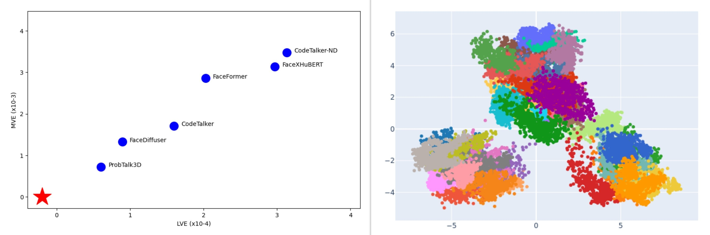

Education
- 2017: IGCSE English, A - University of Cambridge
- 2018: High School Graduate, 17.0, Mathematics, Computers, Physics - Nicosia Lyceum
- 2018 - 2019: Military Service as a Reserves Officer of the Tanks Battalion as First of the 2018 class - National Guard, Cyprus
- 2019 - 2022: BSc Computer Science with a First in Exams - University of Reading, UK
- 2022 - 2024: MSc Game and Media Technology - Utrecht University, The Netherlands
Master's Thesis: Evaluation metrics for deep learning methods for 3D facial animation synthesis
-
The recent advancements in the research field of Audio-Driven Facial Animations have provided both new state-of-the-art approaches and more topics to be discovered in depth. One of
the main factors of any new method is the ability to evaluate its achievements accurately and
representatively. In Audio-Driven Facial Animations, this is achieved using evaluation metrics
that either objectively or subjectively compare state-of-the-art models. As expected from an
early-stage research field, the evaluation section has been following the typical path focusing
on simple metrics in most cases. This study aims to clarify the process for future researchers
through an in-depth analysis of evaluation metrics. Another important aspect of this study is
the understanding of the different approaches deterministic and non-deterministic models need
in terms of the evaluation of the results. Apprehending the nature of facial animations will also
be examined by exploring ground truth datasets in various ways. Read Thesis
Publication: "Wild West" of Evaluating Speech-Driven 3D Facial Animation Synthesis: A Benchmark Study
-
Recent advancements in audio-driven 3D facial animation have led to a surge in research, with a variety of deterministic and non-deterministic approaches being explored. However, inconsistencies in experimental setups and a lack of standardized evaluation methods make it difficult to compare techniques, and the study shows that subjective perceptual ratings do not always align with objective metrics across different datasets. Publication Page
Projects
Transfer Learning and Grad-CAM for Brain Tumor Classification
Used Grad-CAM to assess the performance of state-of- the-art pre-trained CNNs when used for transfer learning. The learning task at hand concerned the classification of brain tumors based on a data set of Magnetic Resonance Imaging (MRI) images of the human brain.
Player Modeling using AI tools
A game was designed and implemented to provoke in-game choices and actions associated with the player’s personality. Five multivariate linear regression models were em- ployed to predict the scores of the player’s personality traits after a playthrough. To build the necessary dataset for training the models, data gathering ses- sions were performed, that involved 21 participants
Crowd Simulation using RVO method
Created a Crowd Simulation environment with different types of agent and implemented the RVO method and extended it in a way that it is able to handle static agents in path planning. Explored the human nature in similar senarios and implemented a realistic environment with agents acting accordingly
3D shape retrieval system
Created a content-based 3D shape retrieval system that, given a 3D shape, finds and shows to the user the most similar shapes in a given 3D shape database. Pre-process a database with different shapes and created a user-friendly tool
Robot Wanderer
A game designed in the Unity Game Engine exploring all the possible implementations with it. Robot Wanderer is a robot simulator created to give to any player the chance to experience something completely new. A comprehensive view into story-telling and adventure.
Image Calibration using Computer Vision
Created calibration and voxel reconstruction pipeline with both online and offline input. Used multiple calibration techniques along with a variety of reconstruction methods and clustering the outcome.
Skills Summary
Communication:
- Throughout my early student life I was assigned with a lot of different leading positions as the president of my class.
- Being a student abroad helped me develop communication skills to meet new people everyday and work with a lot different cultures at the University.
- Combining working on my Thesis and being a Teaching Assistant helped my gain communication skills and be able to provide help to other students.
Organization:
- I combined at the same time my studying, part-time jobs, student societies and hobbies during my University Years.
- Held the position for Secretary of Students’ Affairs of the Cypriot Students in the UK. I have written multiple articles and was part of many actions considering the Cyprus problem.
- During my Military Service I had to organize more than 150 soldiers and fulfill my superiors demands.
Technical Skills:
- Proficient in a wide array of software tools and programming languages, including C, C++, Java, and Python.
- Experienced in database management using pgAdmin, virtualization with Qemu and VirtualBox, and compiler development in Java.
- Skilled in creating marketing animations and developing programs for both console and Android platforms using Unity and Android Studio.
- Specialized expertise in Unity Game Engine, demonstrated through the development of a robot simulator for the Final Year Project.
- Advanced theoretical and practical skills acquired during Master's studies, including but not limited to Pattern Recognition, Machine Learning, Artificial Intelligence for Games, Computer Vision algorithms, Robotics theory, HCI topics, software development, and Multimedia Retrieval methods.